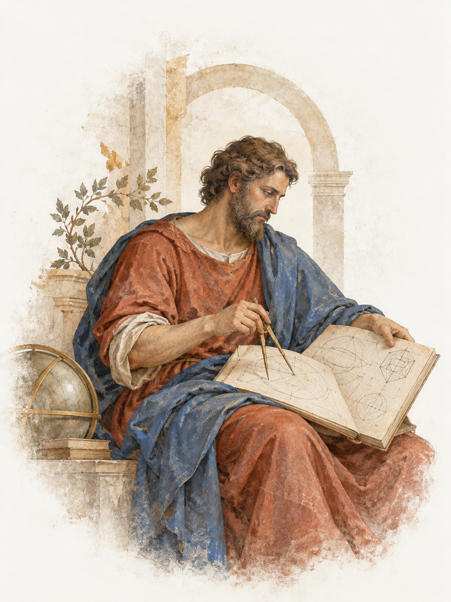

THE INVESTIGATION 01 / 05
異常，從哪裡開始？
同一台設備，同一段時間。
先把異常放回時間軸，故事才有起點。
7 筆連續低良率批次
先找時間，再找線索。
A STUDY IN PROCESS & PRECISION · 01
The art of asking why.
良率下降時，我會怎麼找出問題？
從 500 筆模擬 CVD 批次出發，循著異常、設備與製程條件，把數據轉化為有依據的工程判斷。

Observation. Reasoning. Discovery.模擬資料作品
設備原因與改善成效仍待現場驗證。
THE INVESTIGATION 01 / 05
同一台設備，同一段時間。
先把異常放回時間軸，故事才有起點。
7 筆連續低良率批次
先找時間，再找線索。
我先檢查批次、時間與缺失值，再以 Yield < 95% 篩出需要調查的批次。CVD-02 在 2026-01-10 出現連續 7 筆低良率批次，值得回頭檢查同一段時間的製程條件。

Engineering Insight壓力與良率在同一筆批次出現偏移；起點的 Defect Count 卻是 0。這支持同步調查壓力，還不能說壓力先造成缺陷，再造成良率下降。
「我先找出異常在哪段時間，接著把良率和製程參數放在同一條時間軸。看見一起改變，是調查線索，還不是因果證明。」
95% 是這個案例的低良率篩查門檻；SPC 則比較目前數值是否超出過去波動範圍。我使用 I-MR Chart，同時看單筆數值與前後批次變化。
不同設備、配方要分開建立基準。我取各 Tool × Recipe 前 60% 的時間序列估計控制限，後續固定使用。基準期本身也有訊號，這組控制限適合回溯篩查，尚未完成量產基準驗證。
THE INVESTIGATION 02 / 05
三台設備的平均良率很接近。
換看失敗頻率，調查的優先順序就清楚了。
18.8%CVD-02 的低良率比例
比較設備，也比較波動。
如果只看平均良率，三台設備很接近。我另外比較低良率比例與波動程度；分析波動時，先扣除各配方自己的平均值，減少配方切換造成的差異。波動用標準差（SD）表示，數字越大，代表批次差異越大。
| Tool | 批次數 | 低良率比例 | Yield SD 百分點 | Pressure SD Torr |
|---|---|---|---|---|
| CVD-01 | 160 | 11.2% | 2.00 | 0.257 |
| CVD-02 | 181 | 18.8% | 1.89 | 0.259 |
| CVD-03 | 159 | 9.4% | 1.88 | 0.269 |
「我不會只用一個平均值判定設備最差。異常最多、良率最不穩、壓力最不穩，可能是不同設備，後續檢查也應該不同。」
兩種配方的薄膜目標分別是 100 nm 與 105 nm。如果直接混在一起比較，可能把合理的配方差異誤認成設備漂移。扣除配方平均值能減少這個影響，但不能消除所有混雜因素。
THE INVESTIGATION 03 / 05
缺陷與良率最相關；但在異常起點，
壓力也同時偏移，值得優先核對紀錄。
Pressure優先調查的製程變數
一起變化，是線索；還不是因果。
我結合 Yield 相關性、正常／低良率組的差異與效果量，再校正 Tool、Recipe 和時間，建立調查排序。全資料的前三項是：
「統計排名幫我縮小範圍，時間軸幫我判斷這個線索是否合理。兩者都指向壓力值得先查，但我還需要設備紀錄才能確認。」
正常／異常組是依 Yield 分組，本來就會帶有結果選擇的影響；校正已知變數，也不能排除未知因素。我會查壓力設定與實測值、感測器校正、Throttle Valve、真空系統、漏氣與 MFC 紀錄，再確認異常是否重複。
Equipment maintenance data is not available, therefore these are engineering hypotheses rather than confirmed hardware root causes.
THE INVESTIGATION 04 / 05
歷史資料裡，有一組條件表現較好。
下一步是設計實驗，確認它能否重現。
47 筆RCP-A 候選資料格的批次數
候選條件，不等於量產規格。
我把 Pressure 與 Temperature 組合起來，查看哪些歷史條件的 Yield 較高、波動較小。這是 Virtual DOE／觀察性分析，沒有實際做隨機化晶圓實驗。
RCP-A 的候選資料格有 47 筆批次，平均 Yield 97.66%，SD 0.79 個百分點。這能幫我規劃實驗條件，還不能直接當成合格製程範圍。
「我用歷史資料找值得試的條件，再安排正式 DOE。高平均值還不夠，我也會看樣本數和波動，避免選到只是碰巧表現好的區間。」
各配方分別依 Pressure、Temperature 分成低／中／高三組；只在至少 10 筆樣本的資料格中，以平均 Yield 減去 SD 選候選格。這是探索性排序，不是規格或信賴下限。
RCP-A 候選觀測範圍：Pressure 7.965–8.072 Torr；Temperature 319.85–320.77 °C。範圍內仍可能有未取樣的組合。
迴歸的 Pressure × Temperature 交互項 p = 2.6e-08。這表示資料中的關聯會隨另一個條件改變，不代表已驗證真實製程效應；正式 DOE 需要隨機化、重複試驗與設備分組。

Engineering Insight紅框是值得進一步測試的歷史資料區間，不能直接拿來修改量產配方。RCP-B 候選只有 10 筆，證據更有限。
THE INVESTIGATION 05 / 05
把發現變成具體的工程行動，
也說清楚：哪些有證據，哪些仍待驗證。
3 個行動審查訊號 · 核對壓力 · 規劃實驗
觀察 → 判斷 → 驗證。
我能從批次資料定位問題，區分配方差異與設備波動，用多種證據排定調查順序，並清楚說明哪些結論已被資料支持、哪些還需要驗證。